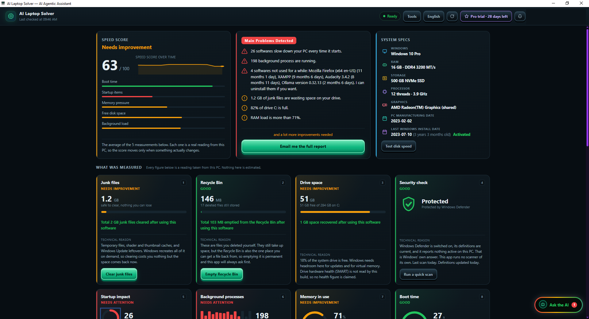
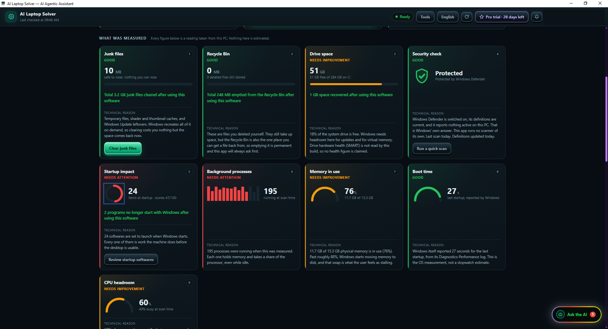
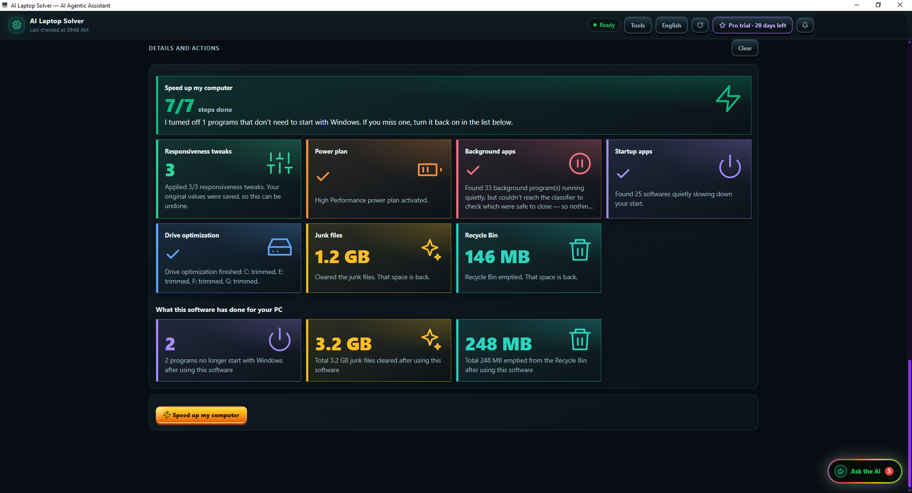
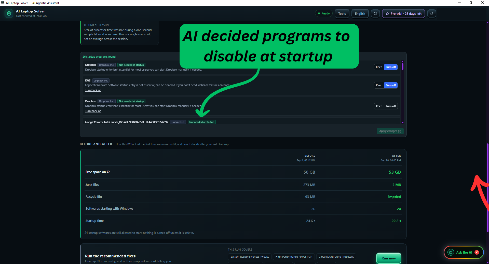

Find out why your PC is slow.
Fix it safely. See the proof.
AI Laptop Solver checks your Windows PC, explains what is slowing it down in plain words, fixes it when you ask, and shows the real before and after.
Get it from Microsoft Store See what it doesWindows 10 (version 2004 or later) and Windows 11. Free to start.

What it does
Every figure comes from a real reading on your PC. Nothing is estimated, and nothing is invented to scare you.
A Speed Score you can trust
Built from real measurements: boot time, startup programs, memory and free disk space.
Shows what is slowing you down
Startup programs, background programs, junk files, a nearly full disk and software you have not used for months.
Security check
Reads Microsoft Defender’s status and tells you what it found, in plain language. The app does not run a scanner of its own.
Speed up, step by step
Applies a plan and shows a before and after for every step, so you can see what changed.
Startup programs under your control
Turn off the ones you choose, and turn them back on whenever you like.
English and Bangla
The whole app works in English or Bangla, with one button to switch.
Backup and restore
Back up your files and your list of installed programs to a drive you choose, and restore them after a Windows reset. Backups are never uploaded to us.
AI startup review
The AI looks at each program that starts with Windows and suggests which are safe to turn off, with a reason for each. You decide.
You stay in control
Every change is shown before it is made, and most can be undone from the app. If your PC is fine, it says so.
See it working
Real screenshots from a real PC.



Free and Pro
The app is free to download. You can try Pro inside the app. Prices are shown in the app before you pay.
| Free | Pro |
|---|---|
| Scan and Speed Score Security check Startup review Junk and Recycle Bin cleanup Emailed diagnostic report |
One-click Speed up plan Weekly maintenance Backup and restore AI reviews of background programs and files (use AI credits) |
Pro is bought inside the app and paid through PayPal. See the Terms for the details.
Your data
Scanning, cleaning, backups and every change the app makes stay on your PC. The app sends scan results and crash reports to our server, and sends text to an AI service only when you use an AI feature. Read exactly what, why and for how long in the Privacy Policy.
Windows asks for administrator permission when the app starts, because removing system junk and changing startup services needs it.